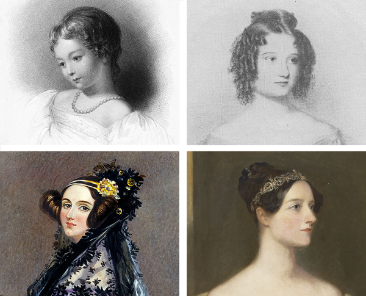

Ada Lovelace (1815 - 1852)

As a child, she attempted to invent powered flight!
At the age of 12, Lovelace conceptualised a flying machine after studying the anatomy of birds and the suitability of various materials. She illustrated her plans to build a winged flying apparatus before she began to think about powered flight.
She wrote to her mother: “I have got a scheme to make a thing in the form of a horse with a steam engine in the inside so contrived as to move an immense pair of wings, fixed on the outside of the horse, in such a manner as to carry it up into the air while a person sits on its back.”
She Was Friends With Dickens
Though far too few people know her today, Ada Lovelace had made some pretty impressive friends in her life, and some of them came to visit her on her deathbed. Just a couple months before she gave out, she received a visit from none-other than Charles Dickens. She implored Dickens to read her an account of death from one of his books.
That might have terrified some people, but Lovelace had come to terms with her mortality by that point.